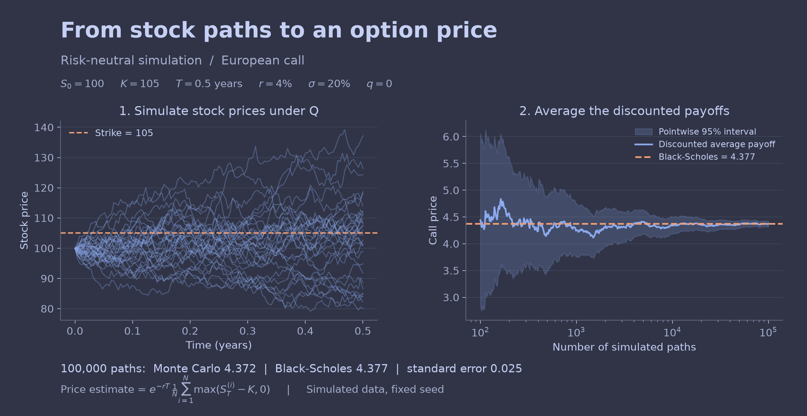

import numpy as np
from scipy.stats import norm
def checked_inputs(S, K, tau, r, sigma, q):
values = np.broadcast_arrays(*[
np.asarray(v, dtype=float) for v in (S, K, tau, r, sigma, q)
])
if any(np.any(~np.isfinite(v)) for v in values):
raise ValueError("all inputs must be finite")
S, K, tau, r, sigma, q = values
if np.any(S <= 0) or np.any(K <= 0):
raise ValueError("spot and strike must be positive")
if np.any(tau < 0) or np.any(sigma < 0):
raise ValueError("time and volatility must be nonnegative")
return values
def d_plus_minus(S, K, tau, r, sigma, q=0.0):
"""Return d_+ and d_- for strictly positive time and volatility."""
S, K, tau, r, sigma, q = checked_inputs(S, K, tau, r, sigma, q)
if np.any(tau == 0) or np.any(sigma == 0):
raise ValueError("d values require positive time and volatility")
scale = sigma * np.sqrt(tau)
d_plus = (np.log(S) - np.log(K) +
(r - q + 0.5 * sigma**2) * tau) / scale
return d_plus, d_plus - scale
def bs_price(S, K, tau, r, sigma, kind="call", q=0.0):
"""European option price with continuous dividend yield q."""
if kind not in ("call", "put"):
raise ValueError("kind must be 'call' or 'put'")
S, K, tau, r, sigma, q = checked_inputs(S, K, tau, r, sigma, q)
spot_pv = S * np.exp(-q * tau)
strike_pv = K * np.exp(-r * tau)
sign = 1 if kind == "call" else -1
result = np.array(np.maximum(sign * (spot_pv - strike_pv), 0))
regular = (tau > 0) & (sigma > 0)
if np.any(regular):
dp, dm = d_plus_minus(*[
v[regular] for v in (S, K, tau, r, sigma, q)
])
result = result.copy()
result[regular] = sign * (
spot_pv[regular] * norm.cdf(sign * dp)
- strike_pv[regular] * norm.cdf(sign * dm)
)
return result.item() if result.ndim == 0 else resultPricing European Options with the Black-Scholes Model
From simulated stock paths to risk-neutral option prices.
Quantitative Finance
Current
1 Introduction
In this (mini) project we shall be exploring one of the most famous models in financial mathematics. In the early 1970s, the economists Fischer Black, Myron Scholes and Robert Merton developed the Black-Scholes-Merton model (Black and Scholes 1973; Merton 1973) which allowed them to derive a closed form solution for the pricing of European options. We will first introduce the model and derive the Black-Scholes Partial Differential Equation (PDE). We will then derive the closed form solution for the prices of European call and put options, once by using the Black-Scholes PDE and once by using risk-neutral pricing. Finally, we implement the Black-Scholes formula in Python, validate it numerically, and provide a reproducible workflow for comparing European options with a saved market snapshot. No market snapshot is included here, so the empirical comparison remains an exercise.
2 The Black-Scholes-Merton Model
The Black-Scholes-Merton model assumes that a market consists of two assets:
A risk-free asset (zero-coupon bond) with price \(B_t\) at time \(t\) which grows at a constant risk-free interest rate \(r\).
A risky asset (stock) with price \(S_t\) at time \(t\) which follows a geometric Brownian motion with constant drift \(\mu\) and volatility \(\sigma\).
The dynamics are summarized as
\[ \begin{cases} dB_t & = r B_t dt, \\ dS_t & = \mu S_t dt + \sigma S_t dW_t, \end{cases} \]
where \(W_t\) is a standard Brownian motion, \(\mu\) is the drift coefficient and \(\sigma\) is the diffusion coefficient. The stock price is therefore a Geometric Brownian Motion, with solution
\[ S_t = S_0\exp\left( \left( \mu - \frac{\sigma^2}{2} \right)t + \sigma W_t \right), \]
so \(S_t\) is log-normally distributed. The model and its assumptions (constant coefficients, continuous frictionless trading, no dividends) are discussed in more detail in Black-Scholes-Merton Model. Throughout we price a European option (see European Options) with maturity \(T\) and payoff \(h(S_T)\), where
\[ h_{\text{call}}(S_T) = (S_T - K)^+, \qquad h_{\text{put}}(S_T) = (K - S_T)^+, \]
and \(K\) is the strike price.
3 The Black-Scholes PDE
Let \(V(t,S_t)\) be the price at time \(t\) of a derivative with payoff \(h(S_T)\). The idea is to delta-hedge: hold the option together with \(\Delta_t\) shares of stock and \(\alpha_t\) units of the bond so that the randomness cancels. The portfolio
\[ \Pi_t = V(t,S_t) + \Delta_t S_t + \alpha_t B_t \]
is chosen to be self-financing, so that its value changes only through changes in asset prices (see Risk-Neutral Pricing),
\[ d\Pi_t = dV + \Delta_t\,dS_t + \alpha_t\,dB_t. \]
By Itô’s formula,
\[ dV = \left( \partial_t V + \mu S_t\,\partial_S V + \frac{1}{2}\sigma^2 S_t^2\,\partial_{SS} V \right)dt + \sigma S_t\,\partial_S V\,dW_t. \]
Substituting this and the dynamics of \(S\) and \(B\) gives
\[ d\Pi_t = \left( \partial_t V + \mu S_t(\partial_S V + \Delta_t) + \frac{1}{2}\sigma^2 S_t^2\,\partial_{SS} V + r\alpha_t B_t \right)dt + \sigma S_t(\partial_S V + \Delta_t)\,dW_t. \]
Choosing \(\Delta_t = -\partial_S V\) removes the \(dW_t\) term, and also the drift \(\mu\) of the stock. The portfolio \(\Pi_t = V - S_t\partial_S V + \alpha_t B_t\) is then riskless over \(dt\), so to avoid arbitrage it must grow at the risk-free rate, \(d\Pi_t = r\Pi_t\,dt\). Equating the two expressions for \(d\Pi_t\), the \(r\alpha_t B_t\) terms cancel and we obtain the Black-Scholes PDE
\[ \begin{cases} \partial_t V + \dfrac{1}{2}\sigma^2 S^2\,\partial_{SS} V + rS\,\partial_S V - rV = 0, \\[1ex] V(T,S) = h(S). \end{cases} \]
The drift \(\mu\) does not appear: the option price does not depend on the expected return of the stock. In terms of the Greeks (Option Greeks) the PDE reads \(\Theta + \frac{1}{2}\sigma^2 S^2\Gamma + rS\Delta - rV = 0\).
4 Pricing European Options
4.1 Solution of the Black-Scholes PDE
We reduce the PDE to the heat equation. Let \(\tau = T-t\) be the time to maturity and change variables to
\[ x = \log S + \left( r - \frac{\sigma^2}{2} \right)\tau, \qquad V(t,S) = e^{-r\tau}u(\tau,x). \]
Computing the derivatives,
\[ \partial_t V = e^{-r\tau}\left( ru - \partial_\tau u - \left( r - \tfrac{\sigma^2}{2} \right)\partial_x u \right), \quad \partial_S V = \frac{e^{-r\tau}}{S}\partial_x u, \quad \partial_{SS} V = \frac{e^{-r\tau}}{S^2}\left( \partial_{xx}u - \partial_x u \right), \]
and substituting into the PDE, all terms in \(u\) and \(\partial_x u\) cancel, leaving
\[ \partial_\tau u = \frac{\sigma^2}{2}\,\partial_{xx} u, \qquad u(0,x) = h(e^x). \]
This is the heat equation with diffusivity \(\sigma^2/2\) and initial condition \(h(e^x)\). Its solution on the whole line is the convolution of the initial condition with the Gaussian heat kernel (see Heat Equation),
\[ u(\tau,x) = \int_{-\infty}^\infty \frac{1}{\sqrt{2\pi\sigma^2\tau}} \exp\left( -\frac{(x-y)^2}{2\sigma^2\tau} \right) h(e^y)\,dy = \mathbb{E}\left[ h\left( e^{x + \sigma\sqrt{\tau}Z} \right) \right], \qquad Z \sim \mathcal{N}(0,1). \]
Returning to the original variables, \(e^x = S e^{(r-\sigma^2/2)\tau}\) so
\[ V(t,S) = e^{-r\tau}\,\mathbb{E}\left[ h\left( S\exp\left( \left( r - \tfrac{\sigma^2}{2} \right)\tau + \sigma\sqrt{\tau}Z \right) \right) \right]. \tag{1} \]
For a call, \(h(S_T) = (S_T - K)^+\) and \(S_T = S e^{(r-\sigma^2/2)\tau + \sigma\sqrt{\tau}Z}\) exceeds \(K\) exactly when \(Z > -d_-\), where
\[ d_{\pm} = \frac{1}{\sigma\sqrt{\tau}} \left( \log\frac{S}{K} + \left( r \pm \frac{\sigma^2}{2} \right)\tau \right). \]
Splitting the expectation into the two terms of the payoff, using that \(\mathbb{P}(Z > -d_-) = N(d_-)\) with \(N\) the standard normal cumulative distribution function, and the Gaussian identity \(\mathbb{E}[e^{\sigma\sqrt{\tau}Z}\mathbf{1}_{\{Z>-d_-\}}] = e^{\sigma^2\tau/2}N(d_-+\sigma\sqrt{\tau})\), we get
\[ \mathbb{E}\left[ S_T\mathbf{1}_{\{S_T>K\}} \right] = Se^{r\tau}N(d_+), \qquad \mathbb{E}\left[ K\mathbf{1}_{\{S_T>K\}} \right] = KN(d_-), \]
and therefore by (1)
\[ \begin{aligned} C(S,t) &= S\,N(d_+) - Ke^{-r\tau}N(d_-), \\ P(S,t) &= Ke^{-r\tau}N(-d_-) - S\,N(-d_+). \end{aligned} \]
The put price follows in the same way, or from put-call parity \(C - P = S - Ke^{-r\tau}\) (see European Options). The sensitivities of these prices with respect to \(S\), \(\sigma\), \(r\) and \(t\) are the Greeks, discussed in Option Greeks.
4.2 Risk-Neutral Pricing
The second derivation avoids the PDE. By the fundamental theorem of asset pricing (Risk-Neutral Pricing), the price of a derivative is the discounted expected payoff under the risk-neutral measure \(\mathbb{Q}\),
\[ V(t) = e^{-r(T-t)}\,\mathbb{E}_{\mathbb{Q}}\left[ h(S_T) \mid \mathcal{F}_t \right]. \]
To find \(\mathbb{Q}\) we use Girsanov’s theorem: define the Radon-Nikodym Derivative
\[ \frac{d\mathbb{Q}}{d\mathbb{P}}\Big|_{\mathcal{F}_t} = \exp\left( -\theta W_t - \frac{1}{2}\theta^2 t \right), \qquad \theta = \frac{\mu - r}{\sigma}, \]
so that \(W_t^{\mathbb{Q}} = W_t + \theta t\) is a Brownian motion under \(\mathbb{Q}\). The stock dynamics become
\[ dS_t = rS_t\,dt + \sigma S_t\,dW_t^{\mathbb{Q}}, \qquad S_T = S_t\exp\left( \left( r - \frac{\sigma^2}{2} \right)(T-t) + \sigma\left( W_T^{\mathbb{Q}} - W_t^{\mathbb{Q}} \right) \right), \]
and the discounted price \(e^{-rt}S_t\) is a martingale under \(\mathbb{Q}\). Since \(W_T^{\mathbb{Q}} - W_t^{\mathbb{Q}} \sim \mathcal{N}(0, T-t)\) is independent of \(\mathcal{F}_t\), this is exactly the random variable in (1), so the risk-neutral price coincides with the solution of the PDE and we recover the Black-Scholes formulas. The connection between the two approaches is the Feynman-Kac Formula, which states that the solution of the PDE is the risk-neutral expectation.
Note that \(\mu\) has disappeared: under \(\mathbb{Q}\) the stock has drift \(r\), and discounted tradable asset prices are martingales. The volatility \(\sigma\) is the same under \(\mathbb{P}\) and \(\mathbb{Q}\), so it is the only model parameter that must be estimated.
5 Implementation in Python
We take time to maturity \(\tau\) in years. For index options we extend the no-dividend model to a constant continuous dividend yield \(q\). Then
\[ d_+ = \frac{\log(S/K)+(r-q+\sigma^2/2)\tau}{\sigma\sqrt{\tau}}, \qquad d_- = d_+ - \sigma\sqrt{\tau}, \]
\[ C = Se^{-q\tau}N(d_+) - Ke^{-r\tau}N(d_-), \qquad P = Ke^{-r\tau}N(-d_-) - Se^{-q\tau}N(-d_+). \]
This is the dividend adjustment used in S&P’s option index methodology. Setting \(q=0\) recovers the derivation above. At expiry the price is the payoff; at zero volatility it is the discounted deterministic payoff. Inputs may be scalars or broadcast-compatible arrays. Spot and strike must be positive; time and volatility must be nonnegative and all inputs finite.
5.1 Validation
We check the implementation against two properties. First, put-call parity \(C - P = S - Ke^{-r\tau}\) holds up to rounding error. Second, the closed form matches a Monte Carlo estimate of the risk-neutral expectation (1), using \(10^6\) simulated terminal prices.
S, K, tau, r, sigma = 100.0, 105.0, 0.5, 0.04, 0.2
call = bs_price(S, K, tau, r, sigma, "call")
put = bs_price(S, K, tau, r, sigma, "put")
print(f"call = {call:.4f}, put = {put:.4f}")
print(f"parity error = {call - put - (S - K * np.exp(-r * tau)):.2e}")
rng = np.random.default_rng(seed=1)
Z = rng.standard_normal(1_000_000)
S_T = S * np.exp((r - 0.5 * sigma**2) * tau + sigma * np.sqrt(tau) * Z)
disc = np.exp(-r * tau)
for name, payoff, exact in [
("call", np.maximum(S_T - K, 0), call),
("put", np.maximum(K - S_T, 0), put),
]:
est = disc * payoff.mean()
se = disc * payoff.std() / np.sqrt(len(Z))
print(f"{name}: Monte Carlo = {est:.4f} (se {se:.4f}), exact = {exact:.4f}")call = 4.3770, put = 7.2979
parity error = -1.42e-14
call: Monte Carlo = 4.3608 (se 0.0080), exact = 4.3770
put: Monte Carlo = 7.2877 (se 0.0086), exact = 7.29795.2 Visualizing Monte Carlo Pricing
Each simulated stock path is a possible realization of the same risk-neutral geometric Brownian motion. We use drift \(r\), rather than the stock’s historical expected return \(\mu\), because pricing requires the risk-neutral expectation. For this illustration, \(q=0\).
At each time step we simulate the exact transition
\[ S_{t+\Delta t} = S_t\exp\left[ \left(r-\frac{\sigma^2}{2}\right)\Delta t +\sigma\sqrt{\Delta t}\,Z\right], \qquad Z\sim N(0,1), \]
using independent normal draws across paths and time steps. This avoids time-discretization bias in the terminal stock distribution. The call price estimate from \(N\) paths is
\[ \widehat C_N = \frac{1}{N}\sum_{i=1}^N e^{-rT}(S_T^{(i)}-K)^+. \]

The left panel shows 32 of 100,000 simulated paths. Paths finishing below the strike contribute zero; paths finishing above it contribute their discounted payoff. The right panel averages payoffs over progressively more paths. Its horizontal axis is logarithmic. The shaded band is the approximate pointwise 95% confidence interval \(\widehat C_N\pm1.96s_N/\sqrt{N}\), where \(s_N\) is the sample standard deviation of discounted payoffs. It describes sampling uncertainty at each sample size, rather than a simultaneous guarantee for the entire curve.
With seed 7 and the parameters shown, the Monte Carlo price is 4.372, the Black-Scholes price is 4.377, and the standard error is 0.025. Increasing the number of paths reduces typical sampling error at rate \(N^{-1/2}\); the estimate need not approach the exact price monotonically. This is a simulation check under the model’s assumptions, not evidence of agreement with market prices.
The figure source saves the same image used by this page and its gallery card. Regenerate it from the repository root:
.venv/bin/python projects/bs-option-pricing/pricing_visualization.py5.3 Comparison with Market Data
The model has one unknown parameter, the volatility \(\sigma\). The market quotes option prices rather than \(\sigma\), so we invert the formula numerically to obtain the implied volatility \(\sigma_{\text{imp}}\) that reproduces an observed price. Since the call price is strictly increasing in \(\sigma\) (the vega of Option Greeks is positive), a root finder applies.
from scipy.optimize import brentq
def implied_vol(price, S, K, tau, r, kind="call", q=0.0):
"""Scalar IV; reject invalid prices and flag an exhausted bracket."""
lower = float(bs_price(S, K, tau, r, 0.0, kind, q=q))
if not np.isfinite(price):
raise ValueError("price must be finite")
if tau <= 0:
raise ValueError("IV is undefined at expiry")
upper = S * np.exp(-q * tau) if kind == "call" else (
K * np.exp(-r * tau)
)
if price < lower or price >= upper:
raise ValueError("price outside finite-IV bounds")
if price == lower:
return 0.0
f = lambda sigma: bs_price(S, K, tau, r, sigma, kind, q=q) - price
hi = 1.0
while f(hi) < 0 and hi < 64.0:
hi *= 2
if f(hi) < 0:
raise ValueError("IV exceeds numerical search limit")
return brentq(f, 0.0, hi)
print(implied_vol(call, S, K, tau, r)) # recovers sigma = 0.20.2000000000000077For a market comparison, use a saved, dated snapshot rather than fetching changing data during the site build. An SPX snapshot must include dividends and distinguish AM-settled SPX from PM-settled SPXW contracts; see Cboe’s specifications. Use the actual settlement date and time from the contract specification, including any holiday adjustment. Do not infer it from an expiry date alone.
Save market-snapshot.csv with one row per contract and these columns:
contract,kind,strike,bid,ask.quote_time,valuation_time,settlement_time: ISO 8601 timestamps with explicit UTC offsets. Quote and spot observations should be aligned.spot,r,q,sigma_hist: spot at the valuation time, continuously compounded annual rate, estimated continuous dividend yield over the option’s life, and annualized historical volatility.source,rate_source,dividend_source,history_source: provenance for quotes and each estimated input, including the historical window.
For example, estimate sigma_hist as the sample standard deviation of one year of daily log returns multiplied by \(\sqrt{252}\). Use a rate and dividend estimate appropriate to the maturity. These choices are estimates, not measured constants. Keep the original snapshot alongside the derived CSV and plot. The following optional block requires that snapshot; no market results are claimed until it has been supplied and inspected.
import pandas as pd
import matplotlib.pyplot as plt
def compare_snapshot(snapshot):
"""Analyze each quote independently, retaining reasons for rejection."""
rows = []
for row in snapshot.to_dict("records"):
result = dict(row, mid=np.nan, bs_hist=np.nan, iv=np.nan,
tau=np.nan, status="ok")
try:
times = [pd.Timestamp(row[key]) for key in (
"quote_time", "valuation_time", "settlement_time"
)]
if any(pd.isna(t) or t.tzinfo is None for t in times):
raise ValueError("timestamps require explicit UTC offsets")
quote_time, valuation_time, settlement_time = times
# This exercise accepts at most one minute of misalignment.
if abs((quote_time - valuation_time).total_seconds()) > 60:
raise ValueError("quote and spot times are not aligned")
tau = (settlement_time - valuation_time).total_seconds()
tau /= 365 * 24 * 60 * 60 # ACT/365F, including fractional days
if tau <= 0:
raise ValueError("contract has expired")
bid, ask = float(row["bid"]), float(row["ask"])
if not (np.isfinite(bid) and np.isfinite(ask)):
raise ValueError("bid and ask must be finite")
if bid <= 0 or ask < bid:
raise ValueError("nonpositive bid or crossed market")
S, K, r, q, sigma = [float(row[key]) for key in (
"spot", "strike", "r", "q", "sigma_hist"
)]
mid = (bid + ask) / 2
hist = bs_price(S, K, tau, r, sigma, row["kind"], q=q)
iv = implied_vol(mid, S, K, tau, r, row["kind"], q=q)
result.update(mid=mid, tau=tau, bs_hist=hist, iv=iv)
except (ValueError, TypeError, KeyError, OverflowError) as exc:
result["status"] = str(exc)
rows.append(result)
return pd.DataFrame(rows)
snapshot = pd.read_csv("market-snapshot.csv")
results = compare_snapshot(snapshot)
results.to_csv("market-comparison.csv", index=False)
print(results.to_string(index=False))
valid = results.loc[results["status"] == "ok"]
if not valid.empty:
fig, ax = plt.subplots()
# Compare strikes only within the same expiry and option type.
for label, group in valid.groupby(["settlement_time", "kind"]):
group = group.sort_values("strike")
ax.plot(group["strike"], group["iv"], "o-", label=str(label))
ax.set(xlabel="Strike", ylabel="Implied volatility")
ax.legend()
fig.tight_layout()
fig.savefig("market-iv.png", dpi=150)
plt.show()Repricing each contract with its own implied volatility is a calibration identity, not independent validation. A difference between historical- volatility prices and market quotes can reflect estimation error, bid-ask spreads or mismatched inputs. Evidence against a single volatility requires comparing implied volatilities across strikes at the same maturity, with consistent rates, dividends and observation times, and checking whether variation exceeds quote uncertainty. A smile or skew would motivate the models in Volatility Surfaces, Local Volatility Model and stochastic volatility models, including Heston Model. No such pattern has been established by this project yet.
6 Conclusion
We derived the Black-Scholes PDE by delta-hedging, solved it by reduction to the heat equation and, independently, by risk-neutral pricing, and obtained the closed-form prices of European calls and puts. The two approaches agree because of the Feynman-Kac formula. The implementation reproduces put-call parity and a Monte Carlo estimate. The optional snapshot workflow includes dividends, precise settlement times and quote validation; an empirical conclusion awaits a saved dataset and its results. For the general theory see Black-Scholes-Merton Model, European Options and Option Pricing.
7 References
Black, Fischer, and Myron Scholes. 1973. “The Pricing of Options and Corporate Liabilities.” Journal of Political Economy 81 (3): 637–54.
Merton, Robert C. 1973. “Theory of Rational Option Pricing.” Bell Journal of Economics and Management Science 4 (1): 141–83.